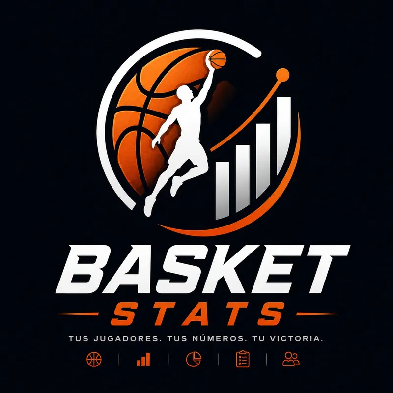

BasketStats
- Problema
- Consultar y comparar métricas de la NBA dispersas dificulta evaluar rendimientos y proyectar resultados con rapidez.
- Solución
- Implementé una app web con Supabase que centraliza y estructura estadísticas de jugadores y equipos para facilitar el análisis y pronóstico.
- Mi rol
- Ingeniero QA
- React
- Node.js
- MongoDB